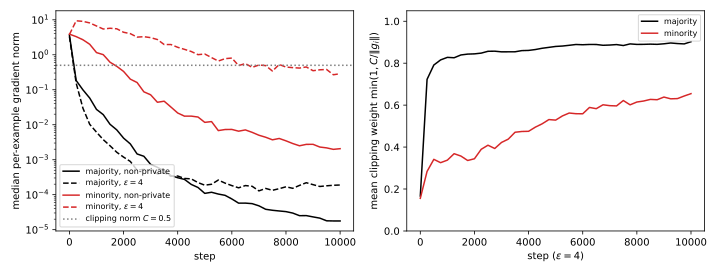
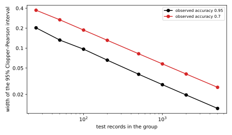

45 Disparate impact
The chapter on private gradient descent trained the part’s running example with differential privacy (DP) at \(\varepsilon = 4\) and lost less than one point of test accuracy: 0.9548 against 0.9610 without privacy. That number is an average over the test set, so it says nothing about who loses the point. Bagdasaryan, Poursaeed & Shmatikov (2019) asked that question. They found that stochastic gradient descent (SGD) with per-example clipping and Gaussian noise, DP-SGD, concentrates the accuracy it loses on the classes and subgroups that are under-represented in the training data. In their gender classifier the drop was much larger on Black faces than on white faces. They called this the disparate impact of DP on model accuracy. Why does it happen, how do you measure it honestly, and what can you do about it?
The answer lies in the two rules of DP-SGD, which are blind to groups and for that very reason are not neutral. Clipping caps each record’s pull, its contribution to the update, so a group’s pull is at most its share of the records times the cap, however badly the model fits it. The noise is the same for everyone, while the part of the update that serves a group grows with the group’s size, so a small group’s signal is weaker against the same noise. A small group that the model finds hard suffers from both, and the two effects compound, because the noise then acts on a pull that clipping has already shrunk.
The running example is the part’s two-layer network on 50-dimensional inputs, with a minority added. Of the \(n = 10{,}000\) training records, 9,500 come from the running example’s training set. The other 500, a share of 5%, lie in another region of input space, where inputs are longer, 8.89 on average against 7.04, which lengthens their gradients. They also follow a rule of their own, which the majority does not teach. Without privacy the model reaches 0.9529 on the majority and 0.9411 on the minority, each measured on 20,000 fresh test records. DP-SGD keeps the settings of DP-SGD, with add/remove neighbours. At \(\varepsilon = 4\) the majority loses 0.59 points of accuracy and the minority 9.34. Table 45.1 lists the symbols of the chapter.
| Symbol | Meaning |
|---|---|
| \(q\); \(C\); \(\eta\); \(T\) | the sampling rate, 0.01; the clipping norm, 0.5; the learning rate, 0.5; the number of steps, 10,000 |
| \(\delta\) | the slack of every guarantee, \(10^{-5}\) |
| \(g_i\); \(\theta\) | the gradient of record \(i\)’s loss; the model’s weights |
| \(g\), \(h\) (as subscripts) | a group of records; \(n_g\) records of group \(g\), and its share \(s_g = n_g/n\) |
| \(B = qn\); \(\sigma\); \(\tau = \sigma C/B\) | the expected batch size; the noise multiplier; the noise per coordinate on the averaged update |
| \(\bar g_g\); \(m_g\) | group \(g\)’s average gradient; its average clipped gradient |
| \(w_g\); \(c_g\); \(\tilde s_g\) | the group’s clipping weight; the fraction of its average gradient that survives clipping; its effective share |
| \(\mathrm{acc}_g\); \(\pi_g\) | a model’s accuracy on test records of group \(g\); the group’s privacy cost |
| \(d_g\); \(\lambda\); \(L_g\) | in the quadratic model of Section 45.3, the number of the group’s own weights, the curvature of its loss, and its loss |
45.1 Measuring disparate impact
What exactly should you measure, and does the effect happen on the running example? A gap between the groups’ accuracies is not enough, because the non-private model may already have one, and DP did not cause that part. The right quantity compares each group with itself, trained with and without privacy.
Definition 45.1 (Privacy cost and disparate impact) Train a model on the same data with the same recipe, once without privacy and once with DP. The privacy cost of group \(g\) is the accuracy the group loses when the recipe is made private, \[\pi_g = \mathrm{acc}_g(\text{non-private}) - \mathbb E\big[\mathrm{acc}_g(\text{private})\big], \tag{45.1}\] where the expectation is over the randomness of private training. DP has disparate impact on groups \(g\) and \(h\) when \(\pi_g \ne \pi_h\), and the privacy cost gap \(|\pi_g - \pi_h|\) measures how much.
Esipova et al. (2023) use this definition, and Bagdasaryan et al. (2019) compare the same differences. The experiment below makes the comparison fair. Every row trains on the same records with the same recipe, and differs only in the clipping and in the noise multiplier that the accountant of DP-SGD sets for each \(\varepsilon\). Test records are drawn independently, so a measured accuracy near 0.9 on 20,000 of them is a binomial proportion with standard deviation \(\sqrt{0.9 \times 0.1/20{,}000} = 0.0021\), far below the differences in Table 45.2. Training is random, so each row averages three runs. And the non-private model serves both groups within 1.2 points, so the baseline is already fair.
Example 45.1 Table 45.2 gives each group’s accuracy on the running example over three training runs per row. At \(\varepsilon = 4\) the majority loses 0.59 points of accuracy and the minority 9.34, 15.7 times as much. At \(\varepsilon = 8\), where DP-SGD found the running example nearly as accurate as non-private training, the majority loses nothing (its accuracy is 0.20 points higher) and the minority loses 8.58 points. At \(\varepsilon = 1\) the ratio falls to 4.6 only because the majority starts to lose too, 7.07 points against the minority’s 32.78. But a test set drawn like the training set, 95% majority, would report a single loss of \(0.95 \times 0.0059 + 0.05 \times 0.0934 = 0.0103\) at \(\varepsilon = 4\). That is about one point, and it hides the minority’s loss of more than nine.
| Training | Majority accuracy | Minority accuracy | Gap | Privacy cost: majority | minority |
|---|---|---|---|---|---|
| Non-private SGD | \(0.9529 \pm 0.0018\) | \(0.9411 \pm 0.0052\) | 0.0119 | — | — |
| Clipping only, \(\sigma = 0\) | \(0.9581 \pm 0.0015\) | \(0.9007 \pm 0.0048\) | 0.0574 | \(-0.0051\) | 0.0404 |
| \(\varepsilon = 8\), \(\sigma = 0.917\) | \(0.9550 \pm 0.0006\) | \(0.8553 \pm 0.0110\) | 0.0997 | \(-0.0020\) | 0.0858 |
| \(\varepsilon = 4\), \(\sigma = 1.36\) | \(0.9470 \pm 0.0037\) | \(0.8477 \pm 0.0211\) | 0.0993 | 0.0059 | 0.0934 |
| \(\varepsilon = 2\), \(\sigma = 2.28\) | \(0.9366 \pm 0.0082\) | \(0.7574 \pm 0.0379\) | 0.1791 | 0.0163 | 0.1836 |
| \(\varepsilon = 1\), \(\sigma = 4.13\) | \(0.8822 \pm 0.0032\) | \(0.6133 \pm 0.0173\) | 0.2689 | 0.0707 | 0.3278 |
Both causes of the effect are already visible in the table. The clipping-only row has no noise at all, but the minority loses 4.04 points while the majority gains 0.51, so clipping alone is disparate. Noise then widens the gap steadily as \(\varepsilon\) falls (Figure 45.1). The next two sections explain each part. The minority’s runs also vary more, which Section 45.4 takes up.

The published experiments found the same pattern, for example on an undersampled class of handwritten digits (Esipova et al. 2023, Table 2).
45.2 Clipping reweights the groups
Clipping without noise gives no privacy at all, but in Table 45.2 it costs the minority 4.04 points. How can a rule that treats every record the same way treat groups differently? Each DP-SGD step adds up the clipped gradients of a Poisson batch, adds Gaussian noise, and divides the noisy sum \(G_t\) by the public expected batch size \(B = qn\). Each record enters the batch with probability \(q\), so the average update is the average gradient with each record weighted by how much of it clipping keeps (DP-SGD): \[\mathbb E\Big[\frac{G_t}{B}\Big] = \frac1n\sum_{i=1}^n\min\Big(1, \frac C{\|g_i\|}\Big)g_i. \tag{45.2}\] The rest of the chapter tracks the factor in front of each gradient, record by record and then group by group.
Definition 45.2 (Clipping weights) A record’s clipping weight is \(\min(1, C/\|g_i\|)\), the factor clipping multiplies its gradient by. A group’s clipping weight \(w_g\) is the average of its records’ clipping weights. Group \(g\)’s average gradient and average clipped gradient are \[\bar g_g = \frac1{n_g}\sum_{i\in g}g_i, \qquad m_g = \frac1{n_g}\sum_{i\in g}\min\Big(1, \frac C{\|g_i\|}\Big)g_i. \tag{45.3}\]
Split by group, the average update shows each group’s pull. Each clipped gradient is at most \(C\) long, so a group’s pull is capped by its share, however large its gradients are. When the gradients within a group point the same way, the cap becomes a reweighting of the groups.
Proposition 45.1 (Clipping reweights the groups) For any gradients, the expected update of DP-SGD is a share-weighted sum of the groups’ average clipped gradients, and each group’s term is at most its share times \(C\) long: \[\mathbb E\Big[\frac{G_t}{B}\Big] = \sum_gs_g\,m_g, \qquad \|s_g\,m_g\| \le s_g\,C. \tag{45.4}\] Suppose in addition that the records within each group have parallel gradients, and let \(c_g = \|m_g\|/\|\bar g_g\|\) be the fraction of group \(g\)’s average gradient that survives clipping. Then the expected update is the gradient of a reweighted mixture of the groups, \[\mathbb E\Big[\frac{G_t}{B}\Big] = \Big(\sum_hs_h\,c_h\Big)\sum_g\tilde s_g\,\bar g_g, \qquad \tilde s_g = \frac{s_g\,c_g}{\sum_hs_h\,c_h}, \tag{45.5}\] where the effective shares \(\tilde s_g\) are non-negative and add up to 1. If all of group \(g\)’s records also have the same gradient norm, then \(c_g = w_g\).
Proof. The plan is to regroup the sum, bound each group’s part, and then use parallel gradients to pull a scalar out of each group’s part.
- Split the sum. Group the records of the expected update and multiply and divide each group’s part by \(n_g\): \[\frac1n\sum_g\sum_{i\in g}\min\Big(1, \frac C{\|g_i\|}\Big)g_i = \sum_g\frac{n_g}n\cdot m_g = \sum_gs_gm_g. \tag{45.6}\]
- Bound the pull. Each clipped gradient has length at most \(C\), and the length of an average is at most the average of the lengths, by the triangle inequality. So \(\|m_g\| \le C\), and \(\|s_gm_g\| \le s_gC\).
- Parallel gradients. If every \(g_i\) in group \(g\) points along the same unit vector \(e_g\), then \(g_i = \|g_i\|e_g\) and its clipped version is \(\min(\|g_i\|, C)\,e_g\). Averaging, \(m_g\) and \(\bar g_g\) both point along \(e_g\), so \(m_g = c_g\bar g_g\).
- Factor out the total. Substituting step 3 into step 1 and multiplying and dividing by \(\sum_hs_hc_h\) gives Equation 45.5. Each \(\tilde s_g\) is a non-negative term divided by the sum of all such terms, so they add up to 1.
- Equal norms. If all of group \(g\)’s records have the same norm, the ratio of clipped length to length is the same for each record, namely its clipping weight. So \(c_g\) is that common weight, which is also the group’s average \(w_g\).
Equation 45.5 separates two things that clipping does. The factor \(\sum_hs_hc_h\) shortens the update, which a larger learning rate can undo. The effective shares change which mixture of the groups is descended, and no learning rate undoes that. Esipova et al. (2023) find this error of direction far more harmful than the error of length, especially to the under-represented class (their Table 1). The effective shares also move the end point. Clipped gradient descent stops where \(\sum_gs_gm_g = 0\), at the optimum of the reweighted mixture, which leans toward the groups whose gradients clipping cuts least.
A group’s effective share falls when its gradients are long compared with \(C\), for two reasons. The model may fit the group badly, because a misclassified record has a large loss derivative and a record classified with a wide margin a small one. Or the group’s inputs may be large, because a dense layer’s per-example gradient norm is the error’s norm times the input’s norm (DP-SGD). Tran, Dinh & Fioretto (2021) identify both factors, and a small group that the model has not yet learned has both. That sets up a feedback loop. As the model learns the majority, the majority’s gradients fall below \(C\) and its weight rises toward 1, while the minority keeps long gradients and a low weight. So the model learns the minority more slowly, and the minority’s gradients stay long.

Example 45.2 Take 95 majority records whose gradient is \((0.2, 0)\), already short, and 5 minority records whose gradient is \((0, 4)\), long because the model fits them badly (Figure 45.2). Without clipping the average gradient is \((0.95 \times 0.2, 0.05 \times 4) = (0.19, 0.2)\), of length 0.2759. So the five minority records pull as hard as the ninety-five others: the minority’s component is a fraction \(0.2/0.39 = 0.513\) of the sum of the two components. Clipping at \(C = 0.5\) leaves the majority’s gradients the same and shrinks the minority’s to length 0.5. The average becomes \((0.19, 0.05 \times 0.5) = (0.19, 0.025)\), of length 0.1916, and the minority’s fraction falls to 0.116. So the update has turned by 39.0 degrees toward the majority.
Here \(c_{\text{maj}} = 1\) and \(c_{\text{min}} = 0.5/4 = 0.125\), so Equation 45.5 gives the minority an effective share of \(0.05 \times 0.125/(0.05 \times 0.125 + 0.95) = 0.0065\) instead of 0.05. If you instead scale every gradient by \(C/C_{\max}\), with \(C_{\max} = 4\) the largest norm, the update is \((0.0238, 0.0250)\). It is eight times shorter, but at an angle of 0.0 degrees to the true average.
Example 45.3 In the running example, Table 45.3 follows each group’s gradients during training with clipping and no noise, on 1,000 majority and the 500 minority training records. At step 0 both groups are fully clipped, with similar weights, and the minority’s effective share, 0.0495, is its true share. By step 2,500 the majority’s median gradient norm has fallen to \(3.8 \times 10^{-4}\), while the minority’s is still 2.7 and 70% of its records are clipped. The minority’s effective share has fallen to 0.0251, half its true share, at the time it most needs it, with test accuracy 0.6724 against the majority’s 0.9569. The share recovers only as the model learns the minority, to 0.0387 at the end.
| Step | Median norm: majority | minority | Clipped: majority | minority | Weight \(w_g\): majority | minority | Effective share of the minority | Test accuracy: majority | minority |
|---|---|---|---|---|---|---|---|---|---|
| 0 | 3.4 | 3.7 | 1.00 | 1.00 | 0.165 | 0.163 | 0.0495 | 0.5064 | 0.5019 |
| 2,500 | \(3.8 \times 10^{-4}\) | 2.7 | 0.18 | 0.70 | 0.869 | 0.424 | 0.0251 | 0.9569 | 0.6724 |
| 5,000 | \(1.4 \times 10^{-4}\) | 0.71 | 0.14 | 0.54 | 0.891 | 0.579 | 0.0331 | 0.9607 | 0.8137 |
| 7,500 | \(7.7 \times 10^{-5}\) | 0.30 | 0.13 | 0.45 | 0.906 | 0.651 | 0.0364 | 0.9621 | 0.8661 |
| 10,000 | \(7.0 \times 10^{-5}\) | 0.16 | 0.11 | 0.39 | 0.917 | 0.702 | 0.0387 | 0.9613 | 0.8900 |
The same happens with noise (Figure 45.3). At \(\varepsilon = 4\) the minority’s effective share is 0.0261 at step 2,500 and 0.0358 at the end, where its weight is 0.637 against the majority’s 0.902. The noise keeps the minority’s gradients long, so clipping keeps cutting them back.

45.3 The noise floor of a small group
Clipping explains the clipping-only row of Table 45.2, but not why the gap keeps widening as \(\varepsilon\) falls. The noise is the same for everyone, so why should it hurt a small group more than a large one? Because the noise competes with each group’s signal, and a group’s signal in the sum is proportional to its size. On the averaged update the noise has standard deviation \(\tau = \sigma C/B\) per coordinate, whatever the data. In the running example at \(\varepsilon = 4\), \(\tau = 1.36 \times 0.5/100 = 0.0068\).
DP-SGD explains why training works at all when each step’s noise is ten times longer than its signal. The signal keeps pointing the same way, so it adds up in proportion to the number of steps, while independent noise adds up only in proportion to its square root. Apply the same argument to the part of the signal that serves one group. That part is proportional to the group’s share when each of its records pulls about as hard as any other, which gives a first law.
Proposition 45.2 (Break-even time of a group’s signal) Suppose each step moves the weights by a signal that keeps pointing the same way, plus noise that is independent from step to step, has mean zero and has root-mean-square length \(\ell_{\text{noise}}\). Let \(\ell_{\text{sig}}\) be the length of the signal the whole population shares, and suppose the part that serves group \(g\) has length \(s_g\ell_{\text{sig}}\). Then after \(t\) steps the group’s accumulated signal is longer than the root-mean-square length of the accumulated noise exactly when \(t > t_g\), where \[t_g = \frac1{s_g^2}\Big(\frac{\ell_{\text{noise}}}{\ell_{\text{sig}}}\Big)^2. \tag{45.7}\] That is \(1/s_g^2\) times as many steps as a signal the whole population shares needs.
Proof.
- The signal adds up. The group’s signal points the same way at every step, so after \(t\) steps its length is \(t\,s_g\ell_{\text{sig}}\).
- The noise adds up more slowly. The noise vectors are independent with mean zero, so the cross terms of the squared length of their sum average to zero, and the squared lengths add. The sum has mean squared length \(t\,\ell_{\text{noise}}^2\), so its root-mean-square length is \(\ell_{\text{noise}}\sqrt t\).
- Compare. The signal is longer when \(t\,s_g\ell_{\text{sig}} > \ell_{\text{noise}}\sqrt t\). Dividing both sides by \(\sqrt t\,s_g\ell_{\text{sig}}\) and squaring gives \(t > t_g\).
The law compares the group’s signal with the whole noise vector, as DP-SGD does for the full signal, so it is a rough clock, not an exact threshold. It says when a group’s signal can emerge, but not where training settles after that. For that, take a model simple enough to solve exactly. Each group has its own block of weights, which no other group’s loss touches, and its loss is quadratic in them. Step 3 of the proof below needs one fact about a number that is pulled toward zero at each step and kicked by fresh noise.
Lemma 45.1 (A shrinking recursion with noise settles at a fixed variance) Fix a pull strength \(a\) with \(0 < a < 2\). Let the noise terms \(\zeta_t\) be independent of each other and of the start \(x_0\), with mean zero and variance \(\omega^2\), and let a number evolve as \[x_{t+1} = (1 - a)x_t + \zeta_t. \tag{45.8}\] Then the variance of \(x_t\) converges to \[V = \frac{\omega^2}{a(2 - a)}, \tag{45.9}\] and the distance of the variance from \(V\) shrinks by the factor \((1 - a)^2\) at every step, so the starting point is forgotten after about \(1/a\) steps.
Proof.
- One step of variance. The noise \(\zeta_t\) is independent of \(x_t\), so the variances of the two terms add, and the constant factor \(1 - a\) multiplies the variance by its square. Writing \(V_t\) for the variance of \(x_t\), \[V_{t+1} = (1 - a)^2V_t + \omega^2. \tag{45.10}\]
- The fixed point. The \(V\) of the statement solves \(V = (1 - a)^2V + \omega^2\), because \(1 - (1 - a)^2 = a(2 - a)\).
- Convergence. Subtracting the fixed-point equation from step 1 gives \(V_{t+1} - V = (1 - a)^2(V_t - V)\). Since \(0 < a < 2\), the factor \((1 - a)^2\) is below 1, so \(V_t\) converges to \(V\). For small \(a\) the factor after \(t\) steps is \((1 - a)^{2t} \approx e^{-2at}\), which is small once \(t\) is a few times \(1/a\).
A weak pull lets the noise accumulate, and half the pull roughly doubles the variance. The theorem below applies the lemma to each weight of a group, and the variance it settles at is the group’s noise floor. Section M.5 in the appendices derives the same floor from a per-step decomposition of a group’s loss change, due to Tran, Dinh & Fioretto (2021).
Theorem 45.1 (The noise floor of a group) Suppose group \(g\)’s loss depends only on its own block \(\theta_g\) of \(d_g\) weights, which no other group’s loss touches, as \(L_g = \frac\lambda2\|\theta_g - \theta_g^*\|^2\) with curvature \(\lambda > 0\) and optimum \(\theta_g^*\). The training objective is the share-weighted average \(\sum_gs_gL_g\), and gradient descent with learning rate \(\eta\), where \(0 < \eta s_g\lambda < 2\), adds independent noise of standard deviation \(\tau\) per coordinate to the averaged gradient at each step. Then group \(g\)’s expected loss settles at \[\mathbb E[L_g] = \frac{d_g\,\eta\,\tau^2}{2\,s_g\,(2 - \eta s_g\lambda)} \approx \frac{d_g\,\eta\,\tau^2}{4\,s_g}, \tag{45.11}\] and it takes about \(1/(\eta s_g\lambda)\) steps to get there. If clipping multiplies the group’s gradient by a constant factor \(c_g\), as in Proposition 45.1, the same holds with \(s_gc_g\) in place of \(s_g\).
Proof. The plan is to write one step for a single weight of the group, recognize the recursion of Lemma 45.1, and add up the resulting variances into a loss.
- The group’s gradient. Only group \(g\)’s loss depends on \(\theta_g\), and it enters the objective with weight \(s_g\). So the objective’s gradient with respect to \(\theta_g\) is \(s_g\lambda(\theta_g - \theta_g^*)\).
- One step. Write \(x = \theta_g - \theta_g^*\) for the distance from the optimum and \(\tau\xi\) for the noise, with \(\xi\) standard normal. The update \(\theta_g \leftarrow \theta_g - \eta(s_g\lambda x + \tau\xi)\) moves each coordinate as \[x \leftarrow (1 - \eta s_g\lambda)x - \eta\tau\xi. \tag{45.12}\]
- Stationary variance. This is the recursion of Lemma 45.1 with \(a = \eta s_g\lambda\) and noise variance \(\omega^2 = \eta^2\tau^2\). So each coordinate settles at variance \[\frac{\eta^2\tau^2}{\eta s_g\lambda(2 - \eta s_g\lambda)} = \frac{\eta\tau^2}{s_g\lambda(2 - \eta s_g\lambda)}, \tag{45.13}\] and gets there after about \(1/a = 1/(\eta s_g\lambda)\) steps.
- Excess loss. The loss is \(\frac\lambda2\) times the sum of the squared coordinates over the group’s \(d_g\) weights, so its expectation is \(\frac\lambda2d_g\) times step 3’s variance, which is Equation 45.11. For a small group \(\eta s_g\lambda\) is small, so \(2 - \eta s_g\lambda \approx 2\), which gives the approximate form.
- With clipping. If clipping multiplies the group’s gradient by \(c_g\), the group’s term in step 1 becomes \(s_gc_g\lambda(\theta_g - \theta_g^*)\), while the noise is unchanged. Steps 2 to 4 then hold with \(s_gc_g\) in place of \(s_g\).
The floor scales like one over the share. A group with a twentieth of the records sits at about twenty times the excess loss of a group with all of them, and takes twenty times longer to get there. The curvature \(\lambda\) cancels, because a sharper loss is pulled back harder but also pays more for each unit of noise. The share does not cancel, because it scales the group’s pull back to the optimum while the noise stays the same size. Waiting does not help either, because at a fixed budget more steps need more noise per step. For a small sampling rate, twice the steps need twice the noise variance per step (DP-SGD). The break-even count of Equation 45.7 is proportional to that variance, so it doubles too, and grows as fast as the run. Finally, the two mechanisms compound: a group that is 5% of the data and whose gradients clipping halves pays the floor of a group of 2.5%.
The quadratic model is exact for what it assumes, as the simulation below confirms, but a network is not quadratic and its groups do not use disjoint weights. Where the minority’s task overlaps the majority’s, the majority’s gradient does part of the minority’s work, and the penalty is smaller.
Example 45.4 Take the noise of the running example at \(\varepsilon = 4\), \(\tau = 0.0068\), with \(d_g = 51\) weights per group, \(\lambda = 1\) and \(\eta = 0.5\). Table 45.4 compares Equation 45.11 with a simulation of 40,000 noisy steps, averaged over the second half.
| Share \(s_g\) | Excess loss, Equation 45.11 | Simulated | Steps to settle, \(1/(\eta s_g)\) |
|---|---|---|---|
| 0.95 | \(4.07 \times 10^{-4}\) | \(4.07 \times 10^{-4}\) | 2 |
| 0.2 | \(1.55 \times 10^{-3}\) | \(1.55 \times 10^{-3}\) | 10 |
| 0.05 | \(5.97 \times 10^{-3}\) | \(5.99 \times 10^{-3}\) | 40 |
| 0.01 | \(2.96 \times 10^{-2}\) | \(2.97 \times 10^{-2}\) | 200 |
The formula and the simulation agree to within 1%. The floor grows from \(4.07 \times 10^{-4}\) for a group with 95% of the data to \(2.96 \times 10^{-2}\) for a group with 1%, a factor of 73. The approximate form of Equation 45.11 would say 95, the ratio of the shares, but the exact factor \(2 - \eta s_g\lambda\) is 1.525 for the large group rather than 2.
The break-even law is harsher. In DP-SGD the averaged clipped gradient of the running example has length about 0.026 during training. At \(\varepsilon = 4\) the noise has length \(\tau\sqrt{3{,}329} = 0.392\) over the network’s 3,329 weights. So a signal shared by the whole population emerges after \((0.392/0.026)^2 = 228\) steps, while one that is 20% of it needs 5,693 steps. At 5% the count is 91,085, nine times the entire run. The running example’s minority still reaches 0.85 within the run at \(\varepsilon = 4\), so much of what it learns must come from directions that the majority’s gradient also pushes. The law applies to the part of its rule that the rest of the data does not teach.

The network is not the quadratic model, so the last check varies the minority’s share in the network itself.
Example 45.5 Table 45.5 varies the minority’s share with everything else fixed. The minority’s privacy cost falls steeply with its share, from 34.88 points at 1% to 9.34 at 5% and 2.80 at 20%. From 1% to 5% the cost falls by \(0.3488/0.0934 = 3.7\), and from 5% to 20% by \(0.0934/0.0280 = 3.3\). Equation 45.11 predicts that the loss falls in proportion to the share, by 5 and by 4. The cost falls a little less because accuracy is not loss, and it saturates: at 1% the private model is at chance on the minority, 0.5009, and cannot lose more. At 20% the minority’s cost is within three points of the majority’s, which stays below one point throughout (Figure 45.4, left).
| Minority share | Records | Non-private: majority | minority | \(\varepsilon = 4\): majority | minority | Privacy cost: majority | minority |
|---|---|---|---|---|---|---|---|
| 1% | 100 | \(0.9556 \pm 0.0015\) | \(0.8498 \pm 0.0021\) | \(0.9558 \pm 0.0036\) | \(0.5009 \pm 0.0102\) | \(-0.0002\) | 0.3488 |
| 5% | 500 | \(0.9529 \pm 0.0018\) | \(0.9411 \pm 0.0052\) | \(0.9470 \pm 0.0037\) | \(0.8477 \pm 0.0211\) | 0.0059 | 0.0934 |
| 20% | 2,000 | \(0.9395 \pm 0.0016\) | \(0.9787 \pm 0.0004\) | \(0.9355 \pm 0.0019\) | \(0.9507 \pm 0.0038\) | 0.0041 | 0.0280 |
45.4 Measuring per-group accuracy
Every number so far was measured on 20,000 test records per group. Real evaluations are not so generous: a test split of 2,000 records with a 5% minority holds 100 minority records. How precisely can you measure a group’s accuracy, and the gap between two groups, and how much does a single training run say?
Suppose the test records are drawn independently from the group. Given the trained model, each one is then classified correctly or not, independently, with probability equal to the group’s true accuracy \(p_g\). So the number correct is binomial, and the Clopper–Pearson interval of Theorem 4.7, built from exact binomial tail probabilities, covers the true accuracy with probability at least 95%. For the gap between two groups, the two counts come from different test records, so their variances add. Training adds a second source of variation, because a different run gives a different model.
Proposition 45.3 (Measuring a gap between groups) Fix a trained model with true accuracies \(p_g\) and \(p_h\) on groups \(g\) and \(h\), and measure them as \(\hat p_g\) and \(\hat p_h\) on disjoint sets of \(n^{\text{test}}_g\) and \(n^{\text{test}}_h\) test records. Then \(\hat p_g - \hat p_h\) has mean \(p_g - p_h\) and variance \(p_g(1 - p_g)/n^{\text{test}}_g + p_h(1 - p_h)/n^{\text{test}}_h\), and for large counts an approximate 95% interval for the gap is \[(\hat p_g - \hat p_h) \pm 1.96\sqrt{\frac{\hat p_g(1 - \hat p_g)}{n^{\text{test}}_g} + \frac{\hat p_h(1 - \hat p_h)}{n^{\text{test}}_h}}. \tag{45.14}\] If the model itself is the output of a random training run, the variance of one run’s measured accuracy on group \(g\) is the average test-set variance plus the run-to-run variance of the true accuracy: \[\operatorname{Var}(\hat p_g) = \mathbb E\Big[\frac{p_g(1 - p_g)}{n^{\text{test}}_g}\Big] + \operatorname{Var}(p_g). \tag{45.15}\]
Proof.
- The gap. Given the model, each count is binomial, so \(\hat p_g\) has mean \(p_g\) and variance \(p_g(1 - p_g)/n^{\text{test}}_g\). The two counts come from disjoint test records, so they are independent, and the variance of a difference of independent estimates is the sum of their variances. For large counts the difference is approximately normal by the central limit theorem, and 1.96 standard deviations on each side cover 95%. Replacing the true accuracies by the measured ones in the variance gives Equation 45.14.
- Two sources. Over training runs the true accuracy \(p_g\) is itself random. The law of total variance splits the variance of \(\hat p_g\) into the average of its variance given the model, which is step 1’s test-set variance, plus the variance of its mean given the model, which is \(\operatorname{Var}(p_g)\).
A larger test set cannot touch the second term, because only repeated training estimates it. In Table 45.2 the run-to-run standard deviation at \(\varepsilon = 4\) is 0.0211 for the minority against 0.0037 for the majority, almost six times as large. So a comparison of two training recipes on one run each can easily be reversed for the small group. DP-SGD draws the same lesson for overall accuracy, and for a small group it is sharper. The first term, the test-set variance, grows as the group’s test records shrink, so small groups need intervals. At an accuracy near 0.9, the minority’s part of the half-width of Equation 45.14 is \(1.96\sqrt{0.09/n^{\text{test}}_g}\). It falls below 5 points only for \(n^{\text{test}}_g > 0.09\,(1.96/0.05)^2 = 138\), and below 1 point only for \(n^{\text{test}}_g > 3{,}457\). So a 5-point gap needs a few hundred minority test records, and a 1-point gap thousands. Per-group accuracies on private test data are themselves statistics of that data, and to publish them needs its own privacy analysis (Choosing ε).

Example 45.6 Train the running example at \(\varepsilon = 4\) once. On all 20,000 minority test records its accuracy is 0.8641. Table 45.6 measures it on random subsets.
| Test records | Correct | Estimate | 95% Clopper–Pearson interval |
|---|---|---|---|
| 100 minority | 88 | 0.880 | \([0.800, 0.936]\) |
| 500 minority | 424 | 0.848 | \([0.813, 0.878]\) |
| 2,000 minority | 1,742 | 0.871 | \([0.856, 0.885]\) |
| 1,900 majority | 1,812 | 0.954 | \([0.943, 0.963]\) |
With 100 minority records, the split that a 2,000-record test set with a 5% minority would give, the estimate is 0.880. That is 1.6 points above the true 0.8641, and the interval is 13.6 points wide. The non-private model’s 0.9411 from Table 45.2 lies only just above its upper end, 0.936. So on this test set alone the minority’s privacy cost could be anywhere from about half a point to fourteen points. With 500 records the interval is 6.5 points wide, and the majority’s, from 1,900 records at a higher accuracy, is 2 points wide.
By Equation 45.14 the gap between the groups, measured on the 1,900 and the 100 records, is \(0.954 - 0.880 = 0.074\), with a standard error of \(\sqrt{0.954 \times 0.046/1{,}900 + 0.88 \times 0.12/100} = 0.0329\). Its 95% interval is \(0.074 \pm 1.96 \times 0.0329 = 0.074 \pm 0.064\), from 0.010 to 0.138. So the gap is real, but it could be anywhere from one point to fourteen. And this is one training run, on top of which the minority’s accuracy at \(\varepsilon = 4\) varies by 0.0211 from run to run (Table 45.2).
45.5 Mitigations and what they cost
Both mechanisms come from DP-SGD’s two knobs, the clipping norm and the noise. Can you set the knobs, or change the algorithm, so that small groups pay less without more privacy spent? Each fix moves cost around rather than removing it, so you need to know where it moves.
The first idea is to stop clipping from turning the update. Global scaling multiplies every per-example gradient by the same factor \(C/C_{\max}\), where \(C_{\max}\) is a bound that no gradient’s norm exceeds, and then adds noise \(\sigma C\) to the sum. Nothing is clipped, so the direction is right, as the blue arrow of Figure 45.2 shows. Write \(S_t\) for the batch and \(\xi\) for a standard normal vector.
Proposition 45.4 (Global scaling is a large clipping norm) Suppose no per-example gradient is longer than \(C_{\max}\). Then one step of global scaling with learning rate \(\eta\) is one step of DP-SGD with the clipping norm set to \(C_{\max}\), noise multiplier \(\sigma\) and learning rate \(\eta C/C_{\max}\): \[\frac\eta B\Big(\frac C{C_{\max}}\sum_{i\in S_t}g_i + \sigma C\xi\Big) = \frac{\eta C/C_{\max}}B\Big(\sum_{i\in S_t}g_i + \sigma C_{\max}\xi\Big). \tag{45.16}\] Both have the same privacy guarantee.
Proof.
- Factor out the scale. Both terms inside the left-hand bracket carry the factor \(C/C_{\max}\), since \(\sigma C = (C/C_{\max})\,\sigma C_{\max}\). Moving it in front of the bracket gives the right-hand side.
- Recognize DP-SGD. With the clipping norm set to \(C_{\max}\) and no gradient longer than \(C_{\max}\), DP-SGD clips nothing, so its clipped sum is \(\sum_ig_i\) and its noise is \(\sigma C_{\max}\xi\). That is the right-hand bracket, with learning rate \(\eta C/C_{\max}\).
- Privacy. Each scaled gradient is at most \(C\) long and the noise is \(\sigma C\), so the ratio of sensitivity to noise is \(1/\sigma\), as for DP-SGD at the same \(\sigma\), and the same accountant applies.
So global scaling gets the direction right and pays in noise. It is the large-\(C\) end of the clipping-norm curve of DP-SGD with \(\eta C\) fixed, where the noise is as large as possible relative to the gradients. Fix the bound in advance, because a bound read off the training data would make the sensitivity depend on the data. Esipova et al. (2023) instead clip the rare gradients above \(C_{\max}\) and adapt it from a privately estimated count of the gradients that exceed it. They report a smaller privacy cost gap than DP-SGD and earlier mitigations, without group labels.
Group-aware methods do need group labels. Xu, Du & Wu (2021) give a larger clipping norm to groups that are clipped more, and Tran, Dinh & Fioretto (2021) penalize the differences between groups in the terms of their decomposition. Both need each training record’s group, which is itself sensitive and may not be lawful to collect, and their per-group statistics must be computed privately. The simplest group-aware fix, a weight on a group’s loss, fails outright, because clipping scales each long gradient back to length \(C\) whatever the weight.
To give a group more pull, you can instead give it more records in each batch, by sampling its records at a higher rate. Clipping does not undo that, but privacy charges for it. Write \(\varepsilon_{\text{acct}}(q, \sigma, T, \delta)\) for the \(\varepsilon\) that the accountant of DP-SGD gives at sampling rate \(q\), noise multiplier \(\sigma\), \(T\) steps and slack \(\delta\).
Proposition 45.5 (Oversampling a group costs that group’s privacy) Suppose group \(g\)’s records are sampled at rate \(vq\), with \(v > 1\), and the others at rate \(q\), by a rule fixed in advance, and the noisy sum is still divided by \(B = qn\). Then group \(g\)’s term in the expected update grows by the factor \(v\), to \(v\,s_gm_g\). Each of its records has the privacy of the subsampled Gaussian mechanism (Gaussian noise on a Poisson-sampled batch) at rate \(vq\), and the algorithm is \((\varepsilon_g, \delta)\)-DP with \[\varepsilon_g = \varepsilon_{\text{acct}}(vq, \sigma, T, \delta) \;>\; \varepsilon_{\text{acct}}(q, \sigma, T, \delta). \tag{45.17}\] So a fixed target \(\varepsilon\) requires the noise multiplier for rate \(vq\).
Proof.
- The pull. Record \(i\) enters the batch with probability \(q_i\), so the expected clipped sum is \(\sum_iq_i\min(1, C/\|g_i\|)g_i\). With \(q_i = vq\) for group \(g\) and division by \(qn\), regrouping as in Proposition 45.1 gives group \(g\) the term \(v\,s_gm_g\).
- One record’s privacy. The add/remove analysis of a record \(x\) in DP-SGD compares the output with and without \(x\). With \(x\) present, the output is a mixture of two distributions, one for the steps where \(x\) is in the batch and one for the steps where it is not. The other records’ terms are the same in both, so the mixture’s weights are \(x\)’s own inclusion probability and its complement. A record sampled at rate \(vq\) therefore has the privacy of the subsampled Gaussian at rate \(vq\). The rate may depend on the record’s own group, which is part of the record, but not on anything learned from the data.
- The guarantee. \((\varepsilon, \delta)\)-DP must hold for every record, so the algorithm’s \(\varepsilon\) is the largest of the per-record values, which is the oversampled group’s. It exceeds the others’ because the accountant’s \(\varepsilon\) grows with the sampling rate.
So oversampling buys little at a fixed budget. At \(\varepsilon = 4\) for every record, a minority sampled four times as often requires \(\sigma = 4.71\) instead of 1.36. The minority’s pull grows by 4 and the noise by \(4.71/1.36 = 3.46\), so its signal-to-noise ratio improves by only \(4/3.46 = 1.16\), while the majority’s falls by 3.46. The majority’s records end at \(\varepsilon = 0.86\), which is wasted budget. Oversampling with the same \(\sigma\) would silently give the minority \(\varepsilon = 20.96\), the weakest privacy for the group already worst served.
Example 45.7 Table 45.7 compares three changes on the running example at \(\varepsilon = 4\) for every record.
| Change | \(\sigma\) | Majority accuracy | Minority accuracy | Gap |
|---|---|---|---|---|
| None: \(C = 0.5\), \(\eta = 0.5\) | 1.36 | \(0.9470 \pm 0.0037\) | \(0.8477 \pm 0.0211\) | 0.0993 |
| Smaller clipping norm: \(C = 0.05\), \(\eta = 5\) | 1.36 | \(0.9541 \pm 0.0008\) | \(0.8313 \pm 0.0157\) | 0.1229 |
| Larger clipping norm: \(C = 5\), \(\eta = 0.05\) | 1.36 | \(0.9463 \pm 0.0027\) | \(0.8133 \pm 0.0166\) | 0.1330 |
| Oversample the minority four times | 4.71 | \(0.8669 \pm 0.0079\) | \(0.8270 \pm 0.0111\) | 0.0399 |
None of the three changes helps the minority. A ten times smaller clipping norm clips the minority more, and its accuracy falls by 1.64 points while the majority’s rises by 0.71, the clipping mechanism at work. A ten times larger one clips almost nothing, so the direction is right. But with \(\eta C\) fixed, the learning rate is ten times smaller. So the noise in each step, \(\eta\sigma C/B\), is the same, while every gradient shorter than 0.5 moves the weights ten times less. By the end of training more than half of the minority’s gradients are that short (Table 45.3), so its signal falls against the noise and it loses 3.44 points, the noise mechanism at work. These differences are of the size of the run-to-run spread, 0.0157 to 0.0211, so their sizes are uncertain.
Oversampling narrows the gap from 9.93 to 3.99 points, but by levelling down. The minority’s accuracy is 2.07 points lower than without it, and the majority’s 8.01 points lower. A smaller gap is not by itself a fairer model, so report both groups’ accuracy and privacy cost, never the gap alone.
Some of the cost is unavoidable. To learn a group’s own rule privately includes the estimation of statistics of that group’s \(n_g\) records, such as its average features, and private estimation has a price that no algorithm avoids. By the fingerprinting bound, Theorem 27.3 in Lower bounds, a release of the means of \(d\) attributes with constant accuracy under \((\varepsilon, \delta)\)-DP needs at least about \(\sqrt d/(e^\varepsilon - 1)\) records, whatever the mechanism. A smaller group is a smaller dataset, and no clever clipping makes it larger. Feldman (2020) argues the deeper point for any learner: when the data have a long tail of small subpopulations, a good fit to them requires memorizing their few examples, which is what DP forbids. What helps is more data from the group, a larger \(\varepsilon\) with its own costs, or a starting point that already serves the group, such as a public pretrained model (Public data and private fine-tuning).
45.6 Code
The script code/disparate_impact.py trains the running example with a minority group, with the model, clipping and accountant of DP-SGD. It samples each group at its own rate and logs per-group gradient statistics. It also computes the two-dimensional example, the quadratic model and the Clopper–Pearson intervals. From the repository root:
uv run python code/part05-dp-ml/disparate_impact.py| Experiment | Result |
|---|---|
| Per-group accuracy, 5% minority | Privacy cost at \(\varepsilon = 4\): 0.0059 majority, 0.0934 minority; clipping alone: \(-0.0051\) and 0.0404 |
| Two-dimensional clipping example | Minority’s fraction of the update 0.513 → 0.116; the update turns by 39.0 degrees |
| Clipping weights during training | Minority’s effective share 0.0495 at the start, 0.0251 at step 2,500, 0.0387 at the end |
| Quadratic noise floor | Formula and simulation agree; \(4.07 \times 10^{-4}\) at share 0.95, \(2.96 \times 10^{-2}\) at 0.01 |
| Group size at \(\varepsilon = 4\) | Minority privacy cost 0.3488 at 1%, 0.0934 at 5%, 0.0280 at 20% |
| Clopper–Pearson on 100 minority records | 88 correct, \([0.800, 0.936]\), against a true accuracy of 0.8641 |
| Mitigations at \(\varepsilon = 4\) | No change of \(C\) helps the minority; oversampling four times needs \(\sigma = 4.71\) and levels both groups down |
tests/test_disparate_impact.py checks that the output still matches.
45.7 Summary
| Result | Statement | Use |
|---|---|---|
| Definition 45.1 | \(\pi_g = \mathrm{acc}_g(\text{non-private}) - \mathbb E[\mathrm{acc}_g(\text{private})]\) | Report every group’s accuracy and privacy cost, never the gap alone; choosing ε |
| Proposition 45.1 | \(\mathbb E[G_t/B] = \sum_gs_gm_g\), \(\Vert s_gm_g\Vert \le s_gC\); effective shares \(s_gc_g/\sum_hs_hc_h\) | Clipping alone is disparate: groups with large inputs or an untaught rule lose share |
| Proposition 45.2 | A fraction \(s_g\) of the signal needs \(1/s_g^2\) times the steps | Training longer at a fixed \(\varepsilon\) does not help a small group |
| Lemma 45.1 | \(x_{t+1} = (1 - a)x_t + \zeta_t\) settles at variance \(\omega^2/(a(2 - a))\) | Any noisy descent near an optimum |
| Theorem 45.1 | \(\mathbb E[L_g] \approx d_g\eta\tau^2/(4s_g)\), with \(s_gc_g\) under clipping | A group’s privacy cost grows like one over its share |
| Proposition 45.3 | \(\hat p_g - \hat p_h\) plus or minus 1.96 standard errors; run-to-run variance adds | Clopper–Pearson intervals and the spread over several runs for every group |
| Proposition 45.4 | Scaling by \(C/C_{\max}\) is DP-SGD with the clipping norm set to \(C_{\max}\) | A larger \(C\) with \(\eta C\) fixed trades the clipping part for the noise part |
| Proposition 45.5 | Records sampled at \(vq\) get the accountant’s \(\varepsilon\) at \(vq\) | Account at the highest rate; upweighting a loss is undone by clipping; a group too small needs more data or a public model |
45.8 References
- Bagdasaryan, Poursaeed & Shmatikov, “Differential Privacy Has Disparate Impact on Model Accuracy” (NeurIPS 2019). The observation this chapter explains: DP-SGD’s accuracy loss falls on under-represented and complex groups, and existing gaps grow.
- Tran, Dinh & Fioretto, “Differentially Private Empirical Risk Minimization under the Fairness Lens” (NeurIPS 2021). Per-step decompositions of a group’s excess risk into clipping and noise terms, and the role of gradient and input norms.
- Esipova, Ghomi, Luo & Cresswell, “Disparate Impact in Differential Privacy from Gradient Misalignment” (ICLR 2023). Separates clipping’s direction error from its length error, finds the direction error the main cause, and proposes global scaling with an adaptive threshold.
- Xu, Du & Wu, “Removing Disparate Impact on Model Accuracy in Differentially Private Stochastic Gradient Descent” (KDD 2021). Group-dependent clipping that equalizes the groups’ clipping bias.
- Feldman, “Does Learning Require Memorization? A Short Tale about a Long Tail” (STOC 2020). Why fitting small subpopulations well requires memorizing their examples, and so conflicts with privacy.
- Clopper & Pearson, “The use of confidence or fiducial limits illustrated in the case of the binomial” (Biometrika, 1934). The exact interval of Section 45.4.